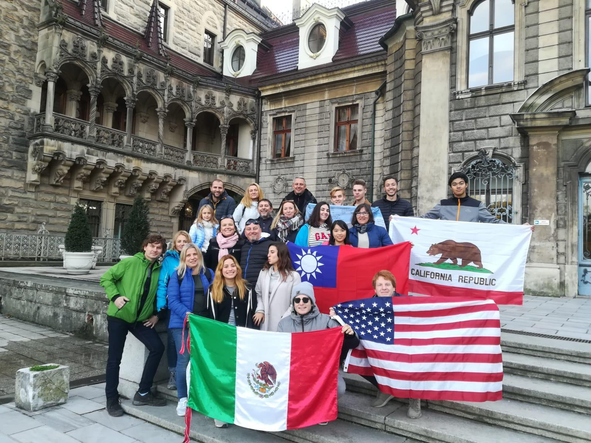
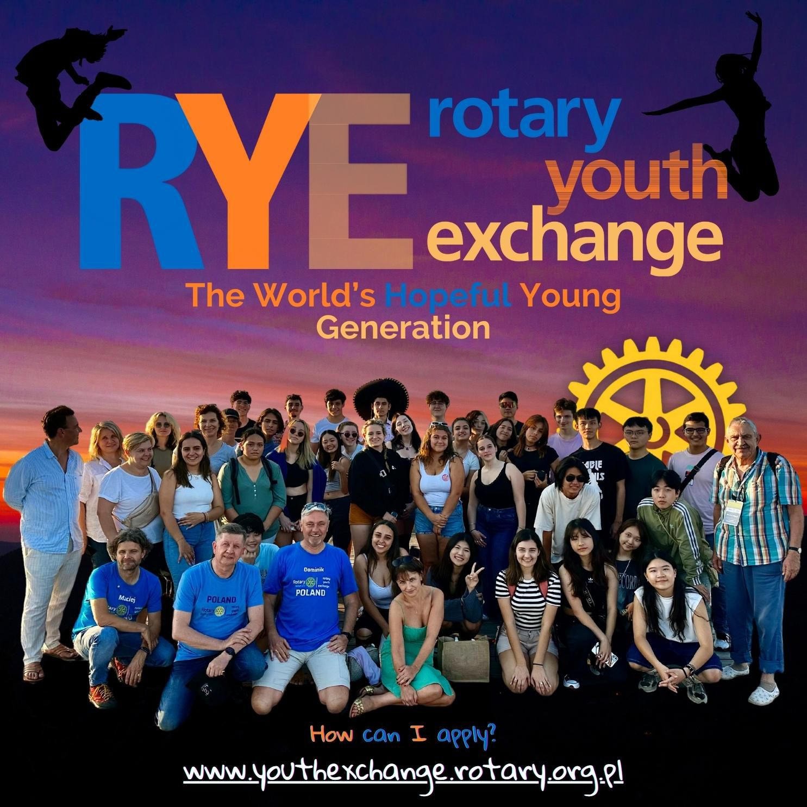
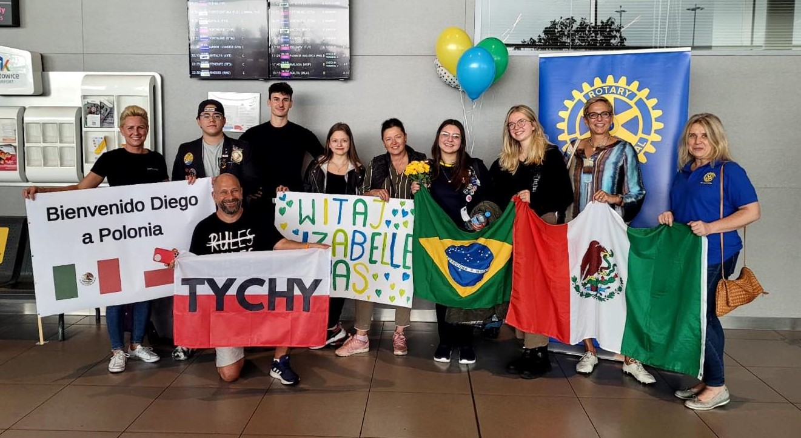

Młodzież i nowe pokolenia
Wymiana młodzieży Rotary (RYE)
Rotary Youth Exchange (RYE) to jeden z najstarszych i najlepiej zorganizowanych programów wymiany młodzieżowej na świecie, w którym ogromną wagę przykłada się do bezpieczeństwa uczestników. Od dziesięcioleci prowadzą go wolontariusze z klubów Rotary, dając co roku tysiącom młodych ludzi szansę poznania świata z nowej perspektywy. Rotary Klub Silesia uczestniczy w tym programie w ramach Dystryktu 2231.
Główna idea: budowanie pokoju, człowiek po człowieku
Celem RYE nie są wakacje za granicą ani turystyka, lecz promowanie międzynarodowego zrozumienia, tolerancji i pokoju. Założenie jest proste: gdy młody człowiek zanurzy się w innej kulturze, zamieszka z lokalnymi rodzinami, pozna rówieśników z drugiego końca świata i nauczy się ich języka, w dorosłym życiu staje się ambasadorem tolerancji – zamiast barier i stereotypów dostrzega to, co nas łączy.
W ten sposób RYE buduje pokój na poziomie pojedynczych ludzi, zmieniając uczestników w świadomych obywateli świata.
Co oferuje program
Program skierowany jest głównie do młodzieży w wieku 15–19 lat (a w wersji New Generation – do 30. roku życia) i ma dwie podstawowe formy:
- Wymiana długoterminowa (Long-Term): trwa cały rok szkolny. Uczestnik mieszka u rodzin goszczących (zwykle 2–3 w ciągu roku, co pozwala lepiej poznać kraj) i uczy się w lokalnej szkole średniej.
- Wymiana krótkoterminowa (Short-Term): trwa od kilku tygodni do 3 miesięcy. Może mieć formę bezpośredniej wymiany rodzinnej (rodziny goszczą u siebie nawzajem swoje dzieci w wakacje) lub międzynarodowych obozów tematycznych (np. żeglarskich, narciarskich, kulturowych).
Dlaczego RYE jest wyjątkowe
- Bezpieczeństwo i wsparcie: nad każdym uczestnikiem czuwa sieć wolontariuszy – klub wysyłający w Polsce i klub goszczący na miejscu, w tym osobisty opiekun (tzw. „Counsellor”).
- Finansowanie przez wolontariat: lokalne kluby Rotary i rodziny goszczące zapewniają zakwaterowanie, wyżywienie oraz naukę w szkole bez czesnego. Uczestnik (lub jego rodzice/opiekunowie) pokrywa koszty podróży, ubezpieczenia, dokumentów i kieszonkowego.
Rola Rotary Klubu Silesia
RC Silesia może działać jako klub wysyłający, goszczący lub patronujący, współpracując w ramach Dystryktu 2231 i Komitetu Wymiany Młodzieży Rotary w Polsce. Koordynatorem wymiany w klubie jest oficer wymiany młodzieży Agnieszka Koniarek-Smorzewska.
Agnieszka Koniarek-Smorzewska, członkini Rotary Klubu Silesia, jako Oficer Wymiany Młodzieży (RYE) RC Silesia koordynuje udział klubu w programie wymiany. Kontakt w sprawie wymiany: silesia@rotary.org.pl.
Publikujemy wyłącznie imię, nazwisko i funkcję osoby koordynującej – bez zdjęcia, prywatnego e-maila, telefonu i CV. Oficjalne informacje programu są dostępne w serwisie Komitetu Wymiany Młodzieży Rotary w Polsce.
RYE w praktyce
Program wymiany młodzieży to spotkania, podróże, rodziny goszczące i codzienna nauka międzykulturowego dialogu. Zdjęcia pokazują przykładowe materiały i sytuacje związane z Rotary Youth Exchange.



Materiały zdjęciowe dodano do wersji roboczej. Publikacja produkcyjna wymaga potwierdzenia zgód wizerunkowych uczestników lub ich opiekunów.
Zaproszenie: zostań młodym ambasadorem
Szukasz doświadczenia, które ukształtuje Twoją przyszłość? Chcesz biegle opanować język obcy, zyskać drugą rodzinę na innym kontynencie i przyjaciół w różnych strefach czasowych? Nie szukamy wyłącznie uczniów z najlepszymi ocenami – szukamy młodych, ciekawych świata, otwartych i gotowych na wyzwania osób, które chcą reprezentować Polskę jako młodzi ambasadorowie naszej kultury.
Jak dołączyć
Pierwszy krok to kontakt z klubem Rotary. W RC Silesia wymianę koordynuje oficer wymiany młodzieży Agnieszka Koniarek-Smorzewska – pisz na silesia@rotary.org.pl. Pełne informacje o programie i zgłoszeniach prowadzi Komitet Wymiany Młodzieży Rotary w Polsce: wymiana.rotary.org.pl.
Ponieważ uczestnicy są niepełnoletni, w proces rekrutacji od początku włączeni są rodzice lub opiekunowie. Rekrutacja na wymianę długoterminową zwykle zamyka się jesienią roku poprzedzającego wyjazd – warto nie zwlekać.
Nota o wizerunku
Zdjęcia z wymiany dotyczą osób małoletnich, dlatego publikujemy je wyłącznie po pisemnej zgodzie opiekuna. Zasady opisuje Polityka wizerunku i zgód.